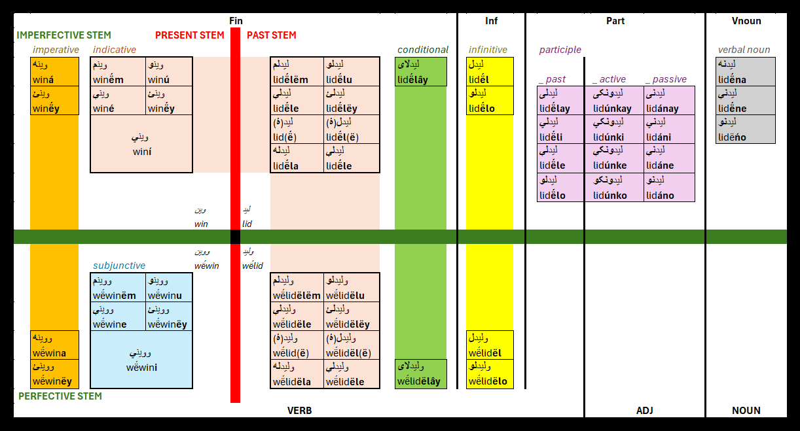

Pashto verbal system
Verb stems
Simple verb forms in Pashto are created by adding endings to one of four verb stems. These stems may be arranged into two and two pairs: present and past stems and imperfective and perfective stems, forming following four combinations: present imperfective, past imperfective, present perfective and past perfective stem. The set of verb forms created from a particular stem is called a system, e.g. the past imperfective system are all forms from the past imperfective stem or perfective system are all forms from both perfective stems.
However, these stems are usually not completely independent on each other, except of a few irregular verbs, described at the end of this overview. For most of the verbs, the perfective stems can be simply derived from their imperfective counterpart (see below). Moreover, for regular verbs the present and the past stems are identical. If they differ, the verb will be referred as semi-regular.
The situation is whole illustrated in this table:
| REGULAR لیکل likë́l “to write” |
SEMI-REGULAR ليدل lidë́l “to see” |
IRREGULAR راتلل râtlë́l “to come” |
|||||||
| Present | Past | Present | Past | Present | Past | ||||
| Imperfective | -لیکـ lik- |
-وینـ win- |
-لید lid- |
-راځـ râż- |
راتلـ râtl- |
||||
| Perfective | -ولیکـ wë́lik- |
-ووینـ wë́win- |
-ولید wë́lid- |
-راشـ râš- |
-راغلـ râġl- |
||||
Perfective stem derivation
For most regular and semi-regular verbs, the perfective stems can be derived from the corresponding imperfective stem by adding a stressed prefix -و wë́-. All forms in the imperfective systems are stressed on the ending, whereas the forms in the perfective system are stressed on this prefix. There are two cases that make the derivation a little more complicated:
If the verb stem begins in the vowel -ا a-, it merges with the perfective prefix into stressed -وا wấ-.
Some verbs already have a prefix in the imperfective stem. The usual prefixes are: -کښېـ kx̌e-, -پرېـ pre-, -ننـ nëna-, -پورېـ pore- and the directional prefixes -را râ-, -در dar- or -ور war-. In this case, the perfective stem does not take another prefix, but instead, only the stress is moved from the ending onto the original prefix (to its first syllable, if there are more). This change does not show in writing.
- “to write”: لیکل likë́l → ولیکل wë́likël
- “to buy”: اخیستل axistë́l → واخیستل wấxistël
- “to leave”: پرېښودل prex̌odë́l → پرېښودل préx̌odël
List of semi-regular verbs
The semi-regular verbs are those, whose present and past stems differ. The following list is incomplete, although it aims on including as much semi-regular verbs, as possible. In the first place, the imperfective infinitive created from the past imperfective stem is shown, the the first person singular of the present indicative created from the present imperfective stem follows. Both stems are highlighted. The list is alphabetically sorted by the infinitive according to the usual order of letters in the Arabic script.
- “buy” - اخیستل axistë́l, اخلم axlë́m
- “put” - ایښودل ix̌odë́l, ږدم ǧdëm
- “wear” - اغوستل aġostë́l, اغوندم aġundë́m
- “fly” - الوتل alwatë́l, الوزم aluzë́m
- “take out” - ایستل istë́l, باسم bâsë́m
- “weave” - اوبدل obdë́l, اوبم obë́m
- “lead” - بیول biwë́l, بيايم byâyë́m
- “leave” - پرېښودل prexodë́l, پرېږدم preǧdë́m
- “recognize” - پېژندل pežandë́l, پېژنم pežanë́m
- “climb” - ختل xatë́l, خېژم xežë́m
- “eat” - خوړل xwaṛë́l, خورم xwarë́m
- “want” - غوښتل ġux̌të́l, غواړم ġwâṛë́m
- “bark” - غپل ġapë́l, غاپم ġâpë́m
- “roll” - غښتل ġëx̌të́l, غړم ġëṛë́m
- “look at” - کتل katë́l, ګورم gorë́m
- “sit down” - کښېناستل kx̌enâstë́l, کښ*ېنم kx̌enë́m
- “squeeze” - کېښکودل kex̌kodë́l, کېکاږم kekâǧë́m
- “read” - لوستل lwastë́l, لولم lwalë́m
- “see” - ليدل lidë́l, وينم winë́m
- “find” - موندل mundë́l, مومم mumë́m
- “take” - نیول niwë́l, نیسم nisë́m
- “kill” - وژل wažë́l, وژنم wažnë́m
- “shoot” - ويشتل wištë́l, ولم wëlë́m
- “say” - ویل wayë́l, وایم wâyë́m
Light verbs
Like in other Indo-Iranian languages, Pashto uses a lot of light verbs constructions. These constructions consist of a verb, often chosen from a small set of usual and frequent verbs, and a nominal part (noun or adjective), which is the main bearer of the meaning. In Pashto, only two verbs are used in these constructions: کېدل kedë́l “to become” for intransitive verbs and کول kawë́l “to do” for transitive verbs. They often form a pair, where the intransitive one can be considered as a kind of passive voice of the transitive one.
Merging light verbs
For many of the light verbs, both parts merge into one in the imperfective system, remaining separeted only in the perfective system. When merging, the initial کـ k- of the verbal part dissapears. All such forms are considered multi-word tokens and separeted to the two parts in the annotation. However, there are still many light verbs that do never merge.
- “to build, to arrange”: جوړ کړل ǰoṛ kṛël (perfective), جوړول ǰoṛawë́l (imperfective) → جوړ + کول ǰoṛ + kawë́l
- “to get built, to get arranged”: جوړ شول ǰoṛ šwël (perfective), جوړېدل ǰoṛedë́l (imperfective) → جوړ + کېدل ǰoṛ + kedë́l
- “to start”: پیل کړل payl kṛël (perfective), پیل کول payl kawë́l (imperfective)
Light verb annotation
For light verb constructions in Pashto, the verbal part is considered the head and the nominal part depends on it
with compound:lvc relation. This allows to distinguish it from regular objects obj or open clausal complements xcomp.
Light verb criteria
The criteria used for considering a light verb in Pashto are (not ordered):
- Is the verbal part a form of کېدل kedë́l or کول kawë́l?
- YES → we cannot decide
- NO → NOT a light verb
- Does the two parts merge in the imperfective system?
- YES → it IS a light verb
- NO → we cannot decide
- If it is transitive, can it take another object?
- YES → it IS a light verb
- NO → NOT a light verb (the nominal part is actually a regular object)
- Does the corresponding transitive/intransitive counterpart exist?
- YES → PROBABLY a light verb
- NO → we cannot decide
- Is the use of the two parts together common and frequent?
- YES → we cannot decide
- NO → PROBABLY NOT a light verb
Overview of verb forms
Verb endings overview
- Present endings:
| SG | PL | |
| 1 | م- -ëm | و- -u |
| 2 | ې- -e | ئ- -ëy |
| 3 | ي- -i | |
- Past endings:
| SG | PL | |||
| M | F | M | F | |
| 1 | لم- -ëlëm | لو- -ëlu | ||
| 2 | لې- -ële | لئ- -ëlëy | ||
| 3 | ۀ- -ë - - |
له- -ëla | لۀ- -ëlë ل- -ël |
لې- -ële |
- Imperative endings:
- 2-SG: ې- -a
- 2-PL: ئ- -ëy
-
Conditional ending: لای- -ëlây
- Infinitive endings:
- Direct case: ل- -ël
- other cases: لو- -ëlo
- Participle endings (Direct M-SG):
- Past participle: لی- -ëlay
- Active participle: ونکی- -unkay
- Passive participle: نی- -anay
- Verbal noun ending (Direct SG): نه- -ëna
The participles are further declined according to corresponding adjectives. The verbal noun is further declined according to corresponding feminine nouns. See nominal system for details.
Simple forms overview
Forms of the imperfective system are stressed on the ending (in particular on its first syllable, if there are more). Forms of the perfective system are stressed on on first syllable of the stem, usually the prefix.
- indicative:
- present (imperfective): present imperfective stem + present endings
- past imperfective: past imperfective stem + past endings
- past perfecgtive: past perfective stem + past endings
- subjunctive: present perfective stem + present endings
- imperative (impf/pf): present (impf/pf) stem + imperative endings
- conditional (impf/pf): past (impf/pf) stem + conditional ending
- infinitive (impf/pf): past (impf/pf) stem + infinitive endings
- participle: past imperfective stem + participle endings
- verbal noun: past imperfective stem + verbal noun endings
Overview of UPOS tags and VerbForm feature values
| UPOS | VerbForm | |
| Verbal noun | NOUN | Vnoun |
| Active participle Passive participle |
ADJ | Part |
| Past participle | VERB | Part |
| Infinitive | VERB | Inf |
| other verb forms | VERB | Fin |
Example verb ليدل lidë́l conjugated in all forms: 